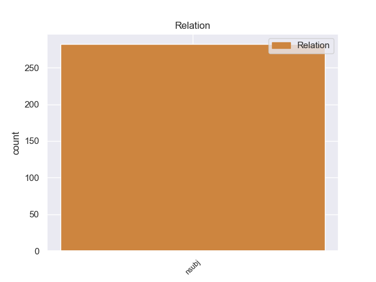
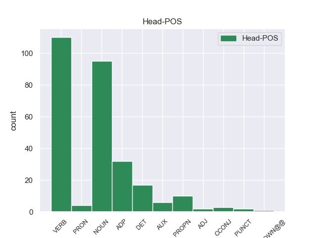
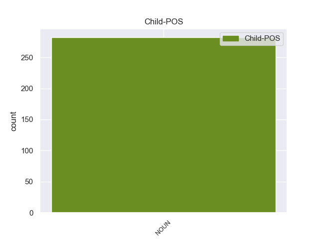

Distribution of features within this leaf



Agreement Rules sorted by frequency.
- When the dependent token is the nominal subject(nsubj) of the head token, and the dependent token is NOUN.
1 San _ _ _ _ 0 _ _ _
2 Julián julián PROPN _ Gender=Masc|Number=Sing 0 _ _ _
3 de _ _ _ _ 0 _ _ _
4 Morcelle _ _ _ _ 0 _ _ _
5 ( _ _ _ _ 0 _ _ _
6 en _ _ _ _ 0 _ _ _
7 gallego gallego NOUN _ Gender=Masc|Number=Sing 2 nsubj _ _
8 : _ _ _ _ 0 _ _ _
9 San _ _ _ _ 0 _ _ _
10 Xulián _ _ _ _ 0 _ _ _
11 de _ _ _ _ 0 _ _ _
12 Morcelle _ _ _ _ 0 _ _ _
13 ) _ _ _ _ 0 _ _ _
14 o _ _ _ _ 0 _ _ _
15 simplemente _ _ _ _ 0 _ _ _
16 Morcelle _ _ _ _ 0 _ _ _
17 , _ _ _ _ 0 _ _ _
18 es _ _ _ _ 0 _ _ _
19 una _ _ _ _ 0 _ _ _
20 parroquia _ _ _ _ 0 _ _ _
21 perteneciente _ _ _ _ 0 _ _ _
22 a _ _ _ _ 0 _ _ _
23 el _ _ _ _ 0 _ _ _
24 municipio _ _ _ _ 0 _ _ _
25 de _ _ _ _ 0 _ _ _
26 Becerreá _ _ _ _ 0 _ _ _
27 , _ _ _ _ 0 _ _ _
28 en _ _ _ _ 0 _ _ _
29 la _ _ _ _ 0 _ _ _
30 provincia _ _ _ _ 0 _ _ _
31 de _ _ _ _ 0 _ _ _
32 Lugo _ _ _ _ 0 _ _ _
33 , _ _ _ _ 0 _ _ _
34 Galicia _ _ _ _ 0 _ _ _
35 ( _ _ _ _ 0 _ _ _
36 España _ _ _ _ 0 _ _ _
37 ) _ _ _ _ 0 _ _ _
38 . _ _ _ _ 0 _ _ _
Disagree Examples:
1 Lugares lugares NOUN _ Gender=Masc|Number=Plur 15 nsubj _ _
2 como _ _ _ _ 0 _ _ _
3 Nueva _ _ _ _ 0 _ _ _
4 York _ _ _ _ 0 _ _ _
5 , _ _ _ _ 0 _ _ _
6 París _ _ _ _ 0 _ _ _
7 , _ _ _ _ 0 _ _ _
8 Buenos _ _ _ _ 0 _ _ _
9 Aires _ _ _ _ 0 _ _ _
10 , _ _ _ _ 0 _ _ _
11 Hong _ _ _ _ 0 _ _ _
12 Kong _ _ _ _ 0 _ _ _
13 etc. _ _ _ _ 0 _ _ _
14 han _ _ _ _ 0 _ _ _
15 admirado admirar VERB _ Gender=Masc|Number=Sing|Tense=Past|VerbForm=Part 0 _ _ _
16 la _ _ _ _ 0 _ _ _
17 música _ _ _ _ 0 _ _ _
18 de _ _ _ _ 0 _ _ _
19 el _ _ _ _ 0 _ _ _
20 acordeón _ _ _ _ 0 _ _ _
21 de _ _ _ _ 0 _ _ _
22 Junkera _ _ _ _ 0 _ _ _
23 . _ _ _ _ 0 _ _ _
1 El _ _ _ _ 0 _ _ _
2 índice _ _ _ _ 0 _ _ _
3 Kospi _ _ _ _ 0 _ _ _
4 de _ _ _ _ 0 _ _ _
5 el _ _ _ _ 0 _ _ _
6 mercado _ _ _ _ 0 _ _ _
7 surcoreano _ _ _ _ 0 _ _ _
8 ganó _ _ _ _ 0 _ _ _
9 3.45 _ _ _ _ 0 _ _ _
10 puntos _ _ _ _ 0 _ _ _
11 , _ _ _ _ 0 _ _ _
12 0.17 _ _ _ _ 0 _ _ _
13 por _ _ _ _ 0 _ _ _
14 ciento ciento NOUN _ Gender=Fem|Number=Plur 24 nsubj _ _
15 , _ _ _ _ 0 _ _ _
16 hasta _ _ _ _ 0 _ _ _
17 las _ _ _ _ 0 _ _ _
18 4 _ _ _ _ 0 _ _ _
19 mil _ _ _ _ 0 _ _ _
20 942.41 _ _ _ _ 0 _ _ _
21 unidades _ _ _ _ 0 _ _ _
22 mientras _ _ _ _ 0 _ _ _
23 el _ _ _ _ 0 _ _ _
24 indicador indicador PROPN _ Gender=Masc|Number=Sing 0 _ _ _
25 de _ _ _ _ 0 _ _ _
26 valores _ _ _ _ 0 _ _ _
27 tecnológicos _ _ _ _ 0 _ _ _
28 Kosdaq _ _ _ _ 0 _ _ _
29 perdió _ _ _ _ 0 _ _ _
30 0.19 _ _ _ _ 0 _ _ _
31 puntos _ _ _ _ 0 _ _ _
32 , _ _ _ _ 0 _ _ _
33 0.03 _ _ _ _ 0 _ _ _
34 por _ _ _ _ 0 _ _ _
35 ciento _ _ _ _ 0 _ _ _
36 , _ _ _ _ 0 _ _ _
37 hasta _ _ _ _ 0 _ _ _
38 los _ _ _ _ 0 _ _ _
39 528.47 _ _ _ _ 0 _ _ _
40 enteros _ _ _ _ 0 _ _ _
41 . _ _ _ _ 0 _ _ _
1 El _ _ _ _ 0 _ _ _
2 barril _ _ _ _ 0 _ _ _
3 de _ _ _ _ 0 _ _ _
4 crudo _ _ _ _ 0 _ _ _
5 Brent _ _ _ _ 0 _ _ _
6 subió subió NOUN _ Gender=Masc|Number=Sing 0 _ _ _
7 hoy _ _ _ _ 0 _ _ _
8 un _ _ _ _ 0 _ _ _
9 0,78 _ _ _ _ 0 _ _ _
10 por _ _ _ _ 0 _ _ _
11 ciento _ _ _ _ 0 _ _ _
12 en _ _ _ _ 0 _ _ _
13 el _ _ _ _ 0 _ _ _
14 mercado _ _ _ _ 0 _ _ _
15 de _ _ _ _ 0 _ _ _
16 futuros _ _ _ _ 0 _ _ _
17 de _ _ _ _ 0 _ _ _
18 Londres _ _ _ _ 0 _ _ _
19 , _ _ _ _ 0 _ _ _
20 hasta _ _ _ _ 0 _ _ _
21 los _ _ _ _ 0 _ _ _
22 91,19 _ _ _ _ 0 _ _ _
23 dólares _ _ _ _ 0 _ _ _
24 , _ _ _ _ 0 _ _ _
25 en _ _ _ _ 0 _ _ _
26 la _ _ _ _ 0 _ _ _
27 primera _ _ _ _ 0 _ _ _
28 jornada _ _ _ _ 0 _ _ _
29 de _ _ _ _ 0 _ _ _
30 negociación negociación NOUN _ Gender=Fem|Number=Plur 6 nsubj _ _
31 después _ _ _ _ 0 _ _ _
32 de _ _ _ _ 0 _ _ _
33 que _ _ _ _ 0 _ _ _
34 la _ _ _ _ 0 _ _ _
35 OPEP _ _ _ _ 0 _ _ _
36 decidiera _ _ _ _ 0 _ _ _
37 el _ _ _ _ 0 _ _ _
38 fin _ _ _ _ 0 _ _ _
39 de _ _ _ _ 0 _ _ _
40 semana _ _ _ _ 0 _ _ _
41 mantener _ _ _ _ 0 _ _ _
42 sus _ _ _ _ 0 _ _ _
43 volúmenes _ _ _ _ 0 _ _ _
44 de _ _ _ _ 0 _ _ _
45 producción _ _ _ _ 0 _ _ _
46 . _ _ _ _ 0 _ _ _
1 Por _ _ _ _ 0 _ _ _
2 su _ _ _ _ 0 _ _ _
3 parte _ _ _ _ 0 _ _ _
4 , _ _ _ _ 0 _ _ _
5 sobre _ _ _ _ 0 _ _ _
6 la _ _ _ _ 0 _ _ _
7 llegada llegada NOUN _ Gender=Masc|Number=Sing 11 nsubj _ _
8 de _ _ _ _ 0 _ _ _
9 Álvarez _ _ _ _ 0 _ _ _
10 , _ _ _ _ 0 _ _ _
11 comentó comentó VERB _ Gender=Masc|Number=Plur 0 _ _ _
12 que _ _ _ _ 0 _ _ _
13 se _ _ _ _ 0 _ _ _
14 ha _ _ _ _ 0 _ _ _
15 notado _ _ _ _ 0 _ _ _
16 " _ _ _ _ 0 _ _ _
17 en _ _ _ _ 0 _ _ _
18 la _ _ _ _ 0 _ _ _
19 tranquilidad _ _ _ _ 0 _ _ _
20 y _ _ _ _ 0 _ _ _
21 la _ _ _ _ 0 _ _ _
22 paciencia _ _ _ _ 0 _ _ _
23 que _ _ _ _ 0 _ _ _
24 tiene _ _ _ _ 0 _ _ _
25 ahora _ _ _ _ 0 _ _ _
26 el _ _ _ _ 0 _ _ _
27 equipo _ _ _ _ 0 _ _ _
28 . _ _ _ _ 0 _ _ _